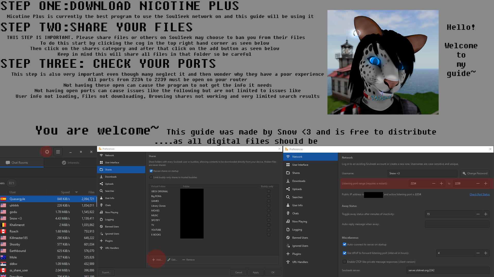

These are all of the Firefox extensions I use. Ads, paywalls, and user tracking suck, so most of these extensions are focused on limiting those. But, there are some other helpful ones thrown in there.
- BetterTTV: Adds more emotes and features to Twitch and YouTube Live
- Bypass Paywalls Clean: Gets you past the paywall blockers from news sites
- ClearURLs: Removes unneccesary tracking elements from the URL
- Dark Reader: My favorite extension by far. Makes all webpages dark mode! They even have an iOS Safari extension, but it costs money
- Ecosia: My search engine of choice, since it doesn't use 3rd party tracking. Allegedly plants trees for your searches
- HTTPS Everywhere: Automatically uses HTTPS security on websites
- Indie Wiki Buddy: Automatically redirects Fandom wikis to better independent wikis
- Keepa: Adds a price history graph on Amazon detail pages
- Search by Image: A tool to search any image across multiple search engines at once
- Simple Tab Groups: One of my favorites for tab management. Allows you to create groups of tabs, assign icons/colors to them, and easily switch between them
- SponsorBlock for YouTube: Adds the ability to not just skip in-video ads (e.g. this video is sponsored by xyzVPN), but also intros, outros, and other filler content
- uBlock Origin: The best ad & tracker blocker out there
Here are some helpful links I've come across over the course of making this website. This is the first website I've made, and these tools made it a lot easier. Hopefully they can help you too!
Also, here are a couple sites I used for inspiration:
I recently homebrewed my 3DS, and collected the websites I used to download software & games.
- 3DS Hacks Guide: The definitive guide for installing Homebrew on your 3DS. Includes instructions for every model and software version of 3Ds.
- Twilight Menu++: This is an app that allows you to play ROM files, like GBA or SNES
- Universal Updater: An easy way to install Homebrew apps
- 3DS QR Codes Subreddit: Contains lots of software and games that you can install through the FBI app's QR code scanner
- hShop: Kind of like the eShop :)
SoulSeek Guide (P2P File Sharing Application)
